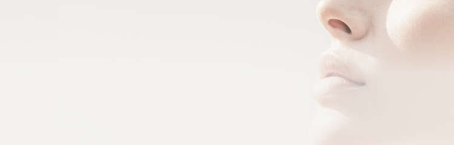
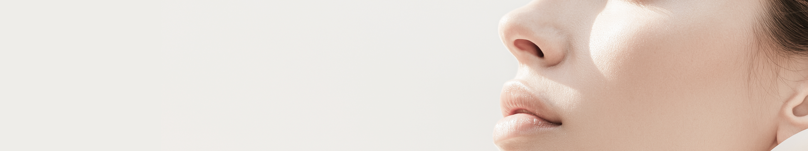
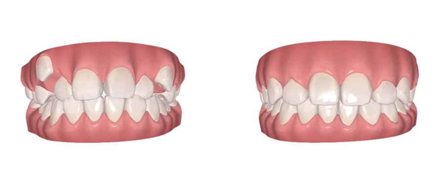
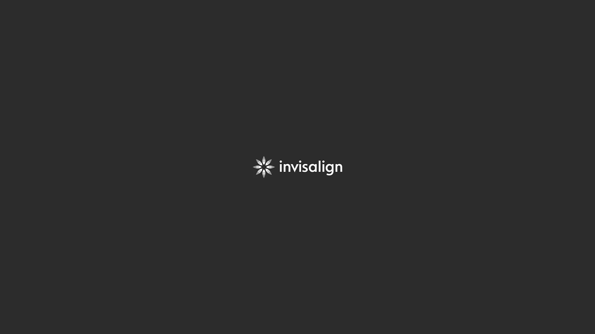
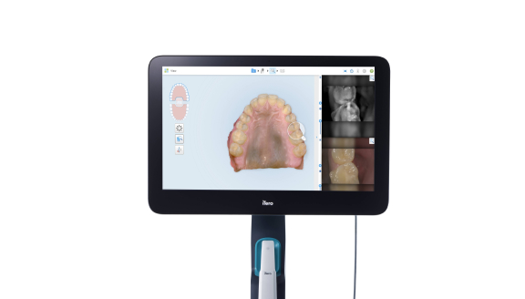
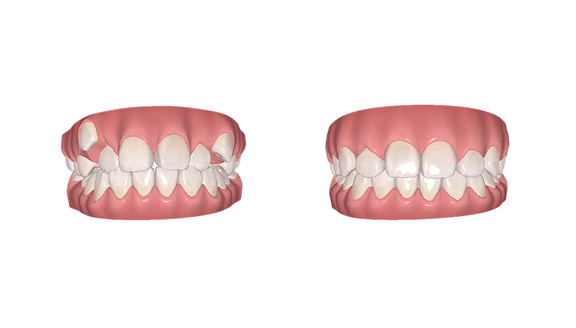

Kids Orthodontics
성장기 교정
성장기에 바로 잡는 골격
자세히 보기


어제보다 빛나는 오늘을 위해

3D 디지털 스캔으로 치아를 정확하고 빠르게
검사하여 맞춤형 치료계획을 수립합니다.
Kids Orthodontics
Invisalign
3D 스캔을 기반으로 정밀하게 분석하여
치료계획을
수립합니다. 계획된 경로대로 치아를 세밀하게
컨트롤하여 예측 가능한 결과를 제공합니다

통증을 줄인
편안한 착용
최대 30%
치료 기간 단축
눈에 띄지 않는 투명 장치
자유로운 탈착
눈에 띄지 않는 투명함
자유로운 탈착
Invisalign
인비절라인은 장치가 아니라
‘치료 설계의 실력 차이’가 결과를 결정합니다.
디어스는 대표원장이 직접
진단하고 설계하여 교합·심미는 물론,
잇몸 건강까지 생각한 교정을 완성합니다.


임상 사진, 엑스레이 및 구강 스캔을 통해
교정 진단 자료를 채득합니다.

정밀 진단 결과에 따른 치료 계획을 바탕으
로
3D 치료 계획을 꼼꼼히 디자인합니다.
Dears Special
Before & After